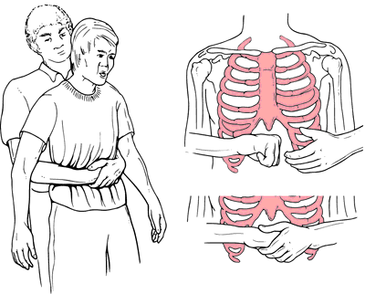

Heimlich Instructions
1. Make a fist and place the thumb side of your fist against your upper abdomen, below the ribcage and above the navel.
2. Grasp your fist with your other hand and press into your upper abdomen with a quick upward thrust.
3. Repeat until object is expelled.
image shown:
